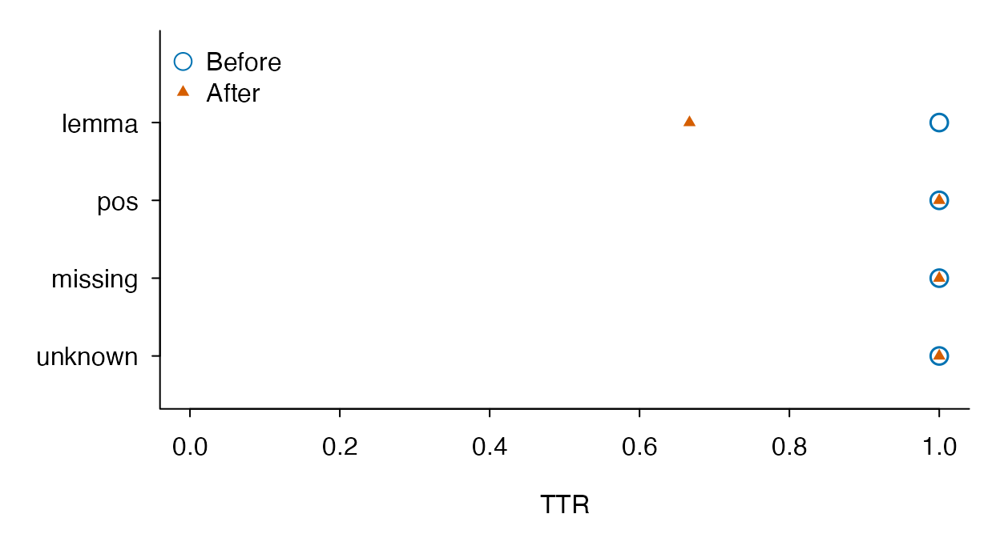

Understanding unmatched words and lexical-unit choices
Source:vignettes/auditing-vocabulary-profiles.Rmd
auditing-vocabulary-profiles.RmdBegin with the question
A teacher wants to describe how much vocabulary in student essays matches New JACET 8000. Several frequent words fail to match. Before interpreting this as advanced vocabulary, check which lexical units were compared with the list. NJ8 contains representative headwords; surface forms and dictionary lemmas can produce different coverage. These authored sentences make that choice visible.
texts <- c(a = "Students have jobs.", b = "Students enjoy jobs.", blank = "")
prepared <- lexdiv_tokenize_batch(texts, tokenizer = "english", case = "lower")
surface <- nj8_profile_batch(prepared, unit = "surface")
audit <- nj8_diagnostics(surface)
audit$unmatched_terms
#> lookup_term token_count document_count
#> 1 students 2 2
#> 2 jobs 2 2
audit$coverage[, c("document_id", "eligible_tokens", "off_list_tokens", "token_coverage")]
#> document_id eligible_tokens off_list_tokens token_coverage
#> 1 a 3 2 0.3333333
#> 2 b 3 2 0.3333333
#> 3 blank 0 0 NAtoken_count counts occurrences;
document_count counts distinct documents containing the
term. Repeating a word in one essay raises only the former. The empty
document remains in coverage with an undefined rate. Do not silently
drop it when describing the sample, or replace its undefined coverage
with zero.
Compare explicit annotations on the same input
Here we supply lemmas ourselves so that the example runs without an
optional dictionary or model. In real work use reviewed annotations, or
explicitly call lexdiv_lemmatize(x, method = "textstem")
after installing textstem. That dictionary backend does not
provide context-sensitive POS disambiguation.
lemmas <- list(a = c("student", "have", "job"),
b = c("student", "enjoy", "job"), blank = character())
annotated <- Map(function(x, lemma) lexdiv_lemmatize(x, lemmas = lemma,
backend_id = "authored-example", backend_version = "1"), prepared, lemmas)
lemma <- nj8_profile_batch(annotated, unit = "lemma")
comparison <- data.frame(document_id = surface$coverage$document_id,
surface_coverage = surface$coverage$token_coverage,
lemma_coverage = lemma$coverage$token_coverage)
comparison
#> document_id surface_coverage lemma_coverage
#> 1 a 0.3333333 1
#> 2 b 0.3333333 1
#> 3 blank NA NA
audit_lemma <- nj8_diagnostics(lemma)
subset(audit_lemma$unit_mappings, unit_changed)
#> surface_term term lookup_term matched token_count document_count
#> 1 students student student TRUE 2 2
#> 2 jobs job job TRUE 2 2
#> unit_changed lookup_changed numeric_introduced whitespace_introduced
#> 1 TRUE FALSE FALSE FALSE
#> 2 TRUE FALSE FALSE FALSEThe change is an answer about matching different units to the same resource. It is not evidence that a writer learned more words or that lemmatization is universally preferable. Choose a lexical unit for the research question and keep it consistent across documents. For a supplied character vector, NJ8 cannot reconstruct surface forms that the caller already replaced upstream.
Compare the same documents under explicit conditions
Lemmatization and word inclusion can change lexical findings (Caltabellotta et al., 2026). Separate the choice of lexical unit from the choice of MATTR window. This example crosses two units with two windows using the same annotated documents. These very small windows illustrate the workflow; they are not recommended settings for learner essays or a replication of the cited study.
conditions <- expand.grid(unit = c("surface", "lemma"),
window_length = c(2L, 4L), stringsAsFactors = FALSE)
conditions$condition_id <- paste0(conditions$unit, "_w", conditions$window_length)
condition_runs <- lapply(seq_len(nrow(conditions)), function(i) {
lexdiv_metrics_text_batch(annotated, unit = conditions$unit[i],
word_inclusion = "all", metrics = "mattr",
window_length = conditions$window_length[i])
})
names(condition_runs) <- conditions$condition_id
condition_results <- do.call(rbind, lapply(seq_along(condition_runs), function(i) {
rows <- condition_runs[[i]]$results
stopifnot(identical(rows$document_id, names(annotated)))
data.frame(condition_id = conditions$condition_id[i],
unit = conditions$unit[i], window_length = conditions$window_length[i],
rows[, c("document_id", "N", "V", "value", "status", "missing_reason")])
}))
row.names(condition_results) <- NULL
condition_results
#> condition_id unit window_length document_id N V value status
#> 1 surface_w2 surface 2 a 3 3 1 ok
#> 2 surface_w2 surface 2 b 3 3 1 ok
#> 3 surface_w2 surface 2 blank 0 0 NA missing
#> 4 lemma_w2 lemma 2 a 3 3 1 ok
#> 5 lemma_w2 lemma 2 b 3 3 1 ok
#> 6 lemma_w2 lemma 2 blank 0 0 NA missing
#> 7 surface_w4 surface 4 a 3 3 NA missing
#> 8 surface_w4 surface 4 b 3 3 NA missing
#> 9 surface_w4 surface 4 blank 0 0 NA missing
#> 10 lemma_w4 lemma 4 a 3 3 NA missing
#> 11 lemma_w4 lemma 4 b 3 3 NA missing
#> 12 lemma_w4 lemma 4 blank 0 0 NA missing
#> missing_reason
#> 1 <NA>
#> 2 <NA>
#> 3 empty_input
#> 4 <NA>
#> 5 <NA>
#> 6 empty_input
#> 7 too_short_for_requested_parameter
#> 8 too_short_for_requested_parameter
#> 9 empty_input
#> 10 too_short_for_requested_parameter
#> 11 too_short_for_requested_parameter
#> 12 empty_inputAll three documents remain in each condition. The four-token window is too large for these sentences; the output retains the missing result and its reason. The empty document also remains. For computable rows, these toy sentences have no within-sentence repetition in either unit, so MATTR is unchanged even though NJ8 coverage changes. Coverage and diversity answer different questions.
Keep condition_runs as well as this display table: the
full objects retain method identities, requested/effective parameters,
token audits and preprocessing. For a paired comparison, match document
IDs within a fixed specification and report the number of usable pairs;
do not silently omit failed conditions.
An all-word/content-word comparison additionally needs aligned UPOS
annotations and their backend identity on every document. Once these
exist, repeat the same explicit workflow with
word_inclusion = "content". The retained token count then
changes, and a window spans selected words rather than the original
token positions. A surface/lemma contrast is also different from a
default/custom lemmatizer contrast: the latter requires two separately
recorded annotation sets on the same original texts. Do not treat them
as interchangeable replications.
Audit alternative annotation schemes
The custom scheme in Caltabellotta et al. (2026, Section 4.3 and
Table 1) distinguished verbal mood and tense. It was not a
dictionary-correction exercise. Here we supply a small authored example
with explicit POS-sensitive labels and a refined verbal scheme. The
package counts supplied strings as given; unit = "lemma"
does not automatically append POS, mood or tense.
scheme_tokens <- lexdiv_tokenize(
"Students see students and saw teachers.", case = "lower")
scheme_pos <- c("NOUN", "VERB", "NOUN", "CCONJ", "VERB", "NOUN")
base_labels <- c("student_NOUN", "see_VERB", "student_NOUN",
"and_CCONJ", "see_VERB", "teacher_NOUN")
refined_labels <- base_labels
refined_labels[c(2, 5)] <- c("see_VERB_Ind_Pres", "see_VERB_Ind_Past")
make_scheme <- function(labels, version) {
lexdiv_lemmatize(scheme_tokens, lemmas = labels, upos = scheme_pos,
backend_id = "authored-counting-scheme", backend_version = version,
upos_backend_id = "authored-upos", upos_backend_version = "1")
}
base_scheme <- make_scheme(base_labels, "base-v1")
refined_scheme <- make_scheme(refined_labels, "tense-v1")
annotation_audit <- lexdiv_compare_annotations(base_scheme, refined_scheme)
annotation_audit$documents
#> document_id tokens before_has_lemma after_has_lemma lemma_changed_tokens
#> 1 document_1 6 TRUE TRUE 2
#> before_has_upos after_has_upos upos_changed_tokens before_has_flemma
#> 1 TRUE TRUE 0 FALSE
#> after_has_flemma flemma_changed_tokens changed_tokens
#> 1 FALSE 0 2
annotation_audit$changes[, c("token_index", "surface", "before_lemma", "after_lemma")]
#> token_index surface before_lemma after_lemma
#> 1 2 see see_VERB see_VERB_Ind_Pres
#> 2 5 saw see_VERB see_VERB_Ind_Past
schemes <- list(base = base_scheme, refined = refined_scheme)
scheme_conditions <- expand.grid(scheme = names(schemes),
inclusion = c("all", "content"), stringsAsFactors = FALSE)
scheme_runs <- lapply(seq_len(nrow(scheme_conditions)), function(i) {
lexdiv_metrics_text_batch(list(essay = schemes[[scheme_conditions$scheme[i]]]),
unit = "lemma", word_inclusion = scheme_conditions$inclusion[i],
metrics = "mattr", window_length = 3)
})
names(scheme_runs) <- with(scheme_conditions, paste(scheme, inclusion, sep = "_"))
lapply(scheme_runs, function(x) x$results[, c("document_id", "N", "V", "value")])
#> $base_all
#> <lexdiv_batch_results: 1 document; 1 metric record; schema unknown>
#> document_id value N V
#> 1 essay 0.9166667 6 4
#>
#> $refined_all
#> <lexdiv_batch_results: 1 document; 1 metric record; schema unknown>
#> document_id value N V
#> 1 essay 0.9166667 6 5
#>
#> $base_content
#> <lexdiv_batch_results: 1 document; 1 metric record; schema unknown>
#> document_id value N V
#> 1 essay 0.7777778 5 3
#>
#> $refined_content
#> <lexdiv_batch_results: 1 document; 1 metric record; schema unknown>
#> document_id value N V
#> 1 essay 0.8888889 5 4Two lemma labels changed; no UPOS labels changed. The conjunction remains in the all-word condition and is excluded in the content-word condition. The window length is measured in the selected tokens. These authored annotations and the three-token window illustrate the workflow, not a replication or a recommended setting. The published study used spaCy, a 50-token window, and the same processing for learner texts and its reference corpora.
Do not submit these POS/morphology keys directly to NJ8 or an ordinary lemma frequency table: their lexical units differ. Keep separate prepared objects for headword lookup and scheme-sensitive diversity, with explicit identities. For frequency comparisons, the reference counts need a corresponding scheme. An improved match rate alone cannot establish that correspondence.
lexdiv_compare_annotations() also accepts named batches.
It matches IDs even if their order differs, retains empty documents, and
rejects differences in original text or tokenization. Missing-to-value
and value-to-missing transitions are changes; two missing values are
unchanged. Backend-only differences remain visible in
$provenance even when $changes is empty. Save
both prepared inputs and the audit:
saveRDS(list(before = base_scheme, after = refined_scheme, audit = annotation_audit, conditions = scheme_conditions, runs = scheme_runs), path).
Backend labels alone are not proof of dictionary content identity. The
dictionary example below records the content fingerprint and saves the
table.
Connect annotation changes to document results
A changed label does not necessarily change a document score. Conversely, a single POS change can remove a token from a content-word analysis and make a fixed-window score unavailable. The feature-level and document-level evaluation in Kyle and Eguchi (2024) motivates checking both levels. Their dependency-based adjective-noun analysis is not replicated here: this example compares supplied lemmas and UPOS, TTR/MATTR and NJ8 coverage. It does not estimate annotation accuracy or vocabulary ability.
Two installed scripts provide an offline, editable workflow. The demo uses six authored documents, including missing annotations, an invented off-list form, all-excluded content words, and an empty text. It performs no inference, downloads or automatic file writes. Source it into its own environment:
sensitivity <- new.env()
invisible(capture.output(sys.source(system.file("examples",
"annotation-sensitivity-demo.R", package = "ldfreq", mustWork = TRUE),
envir = sensitivity)))
effects <- sensitivity$result
effects$changes[, c("document_id", "token_index", "keyword",
"before_lemma", "after_lemma", "before_upos", "after_upos")]
#> document_id token_index keyword before_lemma after_lemma before_upos
#> 1 lemma 1 cats cats cat NOUN
#> 2 lemma 2 saw saw see VERB
#> 3 pos 2 can can can VERB
#> 4 missing 2 fly <NA> fly VERB
#> after_upos
#> 1 NOUN
#> 2 VERB
#> 3 AUX
#> 4 <NA>pre, keyword and post retain
up to 24 Unicode characters of source context on either side. These are
character windows, not quanteda token windows. The helper checks the
original text against both stored text hashes and every token span. This
initial workflow requires identical original and processed
text; use explicit
normalization = "none", case = "preserve" and check the
tokenizer’s other transformations. It rejects changed text,
normalization-induced changes and lowercased offsets instead of
presenting processed positions as original positions. Different token
boundaries are also outside its scope.
For cats saw cat., replacing cats/saw/cat
with cat/see/cat leaves three selected tokens but changes
the type count from three to two. TTR and the illustrative three-token
MATTR change from 1 to 2/3. Surface-based scores and exact
surface-phrase matches remain unchanged. A label’s change alone is not
evidence that the new label is correct.
subset(effects$differences, document_id %in% c("lemma", "pos") &
condition_id == "lemma_content", select = c(document_id, metric_id,
N_before, N_after, value_before, value_after, delta, difference_status))
#> document_id metric_id N_before N_after value_before value_after delta
#> 25 lemma ttr 3 3 1 0.6666667 -0.3333333
#> 26 lemma mattr 3 3 1 0.6666667 -0.3333333
#> 27 pos ttr 3 2 1 1.0000000 0.0000000
#> 28 pos mattr 3 2 1 NA NA
#> difference_status
#> 25 paired
#> 26 paired
#> 27 paired
#> 28 not_computableFor we can run and jump., changing can from
VERB to AUX reduces the selected content sequence from three tokens to
two. TTR stays 1, but MATTR with window 3 becomes unavailable. The
report retains both statuses and missing reasons; the difference is
NA, not zero. delta is after minus before, and
absolute_delta describes its magnitude. A three-token
window is chosen for hand verification, not recommended for a
substantive corpus study.
Show each condition on the original scale
This small example shows both TTR values for each document on their original 0–1 scale. Condition is distinguished by color and symbol. The larger open circle and smaller triangle remain visible when values coincide. Four documents are too few to motivate a smooth distribution estimate.
document_changes <- subset(effects$differences,
condition_id == "lemma_content" & metric_id == "ttr")
document_changes[, c("document_id", "difference_status", "missing_reason_before",
"missing_reason_after")]
#> document_id difference_status missing_reason_before missing_reason_after
#> 25 lemma paired <NA> <NA>
#> 27 pos paired <NA> <NA>
#> 29 missing paired <NA> <NA>
#> 31 unknown paired <NA> <NA>
#> 33 excluded not_computable empty_input empty_input
#> 35 empty not_computable empty_input empty_input
paired <- subset(document_changes, difference_status == "paired")
stopifnot(nrow(document_changes) == 6L, nrow(paired) == 4L)
draw_values <- function(paired, monochrome = FALSE) {
old <- par(mar = c(4.2, 5.2, 1, 1), family = "sans", las = 1,
bty = "l", mgp = c(2.6, .7, 0), tcl = -.25)
on.exit(par(old))
y <- rev(seq_len(nrow(paired)))
colors <- if (monochrome) c("black", "black") else c("#0072B2", "#D55E00")
plot(paired$value_before, y, type = "n", yaxt = "n", ylab = "",
xlab = "TTR", xlim = c(0, 1), ylim = c(.5, nrow(paired) + 1))
axis(2, at = y, labels = paired$document_id)
points(paired$value_before, y, col = colors[1], pch = 21, bg = "white", cex = 1.5, lwd = 1.5)
points(paired$value_after, y, col = colors[2], pch = 17, cex = .8)
legend("topleft", c("Before", "After"), col = colors, pch = c(21, 17),
pt.bg = "white", pt.cex = c(1.5, .8), bty = "n")
invisible(paired)
}
draw_values(paired)
Four of six documents have paired TTR values; excluded
and empty remain in the displayed status table and are not
plotted as zero. The lemma document’s TTR decreases by one
third; the other three paired documents have zero change. This is a
sensitivity illustration, not evidence that the new annotations are more
accurate or that a population effect has been estimated. The four rows
can be drawn in monochrome with
draw_values(paired, monochrome = TRUE). For actual
research, preserve the participant/task structure and annotation
conditions in the full table before calculating any uncertainty
interval.
For a study with enough observations to inspect a smooth continuous distribution, the following optional ggplot2 recipe overlays the two densities. Supply a common positive bandwidth in TTR units and use the same document subset for both curves. Inspect bandwidth sensitivity; the curves describe marginal distributions and do not display which document changed or provide confidence intervals. The boundary correction reflects tails at 0 and 1, rather than simply cropping an unbounded density.
draw_ttr_densities <- function(paired, bw, monochrome = FALSE) {
if (!requireNamespace("ggplot2", quietly = TRUE)) stop("Install optional ggplot2.")
x <- paired$value_before; y <- paired$value_after
stopifnot(is.numeric(x), is.numeric(y), length(x) == length(y), length(x) >= 2L,
all(is.finite(c(x, y))), all(c(x, y) >= 0 & c(x, y) <= 1),
length(unique(x)) > 1L, length(unique(y)) > 1L,
is.numeric(bw), length(bw) == 1L, is.finite(bw), bw > 0,
is.logical(monochrome), length(monochrome) == 1L, !is.na(monochrome))
d <- data.frame(value = c(x, y), condition = factor(
rep(c("Before", "After"), each = length(x)), levels = c("Before", "After")))
colors <- if (monochrome) c("black", "black") else c("#0072B2", "#D55E00")
ggplot2::ggplot(d, ggplot2::aes(x = value, color = condition, linetype = condition)) +
ggplot2::geom_density(bw = bw, bounds = c(0, 1), linewidth = .7, key_glyph = "path") +
ggplot2::geom_rug(sides = "b", alpha = .35, show.legend = FALSE) +
ggplot2::scale_color_manual(values = colors) +
ggplot2::scale_linetype_manual(values = c("solid", "dashed")) +
ggplot2::scale_x_continuous(limits = c(0, 1), breaks = seq(0, 1, .2)) +
ggplot2::labs(x = "TTR", y = "Density", color = NULL, linetype = NULL) +
ggplot2::theme_classic(base_size = 11, base_family = "sans") +
ggplot2::theme(legend.position = "top")
}Use
draw_ttr_densities(study_pairs, bw = chosen_bandwidth) on
your reviewed study table; add monochrome = TRUE for black
solid/dashed lines. A density’s area is normalized separately for each
condition, so report the sample sizes and missingness alongside the
figure. A constant series is rejected: for it, use the raw observations
or an empirical distribution. Do not treat the numerical minimum of two
observations as a recommendation for density estimation. Preserve the
full roster and pairing metadata even when displaying marginal
densities.
Keep selection coverage separate from reference coverage
subset(effects$coverage, document_id %in% c("missing", "unknown", "empty") &
condition_id == "lemma_content", select = c(document_id, version,
source_tokens, selected_tokens, reference_eligible_tokens,
selection_coverage, nj8_coverage_of_eligible, matched_fraction_of_source))
#> document_id version source_tokens selected_tokens reference_eligible_tokens
#> 27 missing before 2 1 1
#> 28 unknown before 1 1 1
#> 30 empty before 0 0 0
#> 33 missing after 2 1 1
#> 34 unknown after 1 1 1
#> 36 empty after 0 0 0
#> selection_coverage nj8_coverage_of_eligible matched_fraction_of_source
#> 27 0.5 1 0.5
#> 28 1.0 0 0.0
#> 30 NA NA NA
#> 33 0.5 1 0.5
#> 34 1.0 0 0.0
#> 36 NA NA NAThe missing-annotation document has one selected word out of two, and
that word matches NJ8. Thus selection coverage is 1/2, conditional NJ8
coverage is 1, and the matched fraction of all source word tokens is
1/2. These are different denominators. source_tokens means
tokenizer output, not all characters or punctuation. NJ8 can apply
additional lookup exclusions; its eligible count is reported separately.
Full resource provenance and diagnostics remain in
runs.
effects$tokens retains every source word position for
each condition and version, including excluded tokens, selected forms,
UPOS, missing-label flags, the selection reason and NJ8 lookup. A
reference query’s position indexes the selected vector; the helper maps
it back to the source token before joining. Never join that query
position directly to an unfiltered source table.
The invented word glorp has a defined zero match rate.
An empty selection has undefined conditional coverage. In
birds fly., the second token changes from missing lemma to
missing UPOS in the content condition; both exclude it, but the reason
changes. Even unchanged scores can therefore warrant inspection.
Reuse and replay with your own annotations
Copy the two example scripts to a study folder for editing. In the
demo, replace the texts and position-aligned lemma/UPOS lists with your
recorded annotations; both columns are required, with unavailable labels
represented by NA. Alternatively, source only
annotation-sensitivity.R and call
annotation_sensitivity(before, after, texts, window_length = ...)
with named batches of lexdiv_tokenization objects and a
named text vector. IDs must agree; order need not.
lexdiv_import_annotations() output is a different format
and cannot be supplied to this helper. Flemma-based scores and changed
segmentation require a separate extension.
The fixed conditions are surface/all, lemma/all and lemma/content,
with TTR and MATTR and the bundled NJ8 table. Inspect
settings before adapting these choices. No general-purpose
public function is added. Keep participant/task metadata separately and
join by unique document ID. before and after
are versions, not independent raters or gold/prediction labels.
# Save explicitly to a new local file, respecting access rules for original text.
saveRDS(list(result = effects, session = sessionInfo()), "annotation-sensitivity.rds")
# A fresh R session: load the helper, then replay from saved inputs.
source(system.file("examples", "annotation-sensitivity.R", package = "ldfreq"))
saved <- readRDS("annotation-sensitivity.rds")$result
replayed <- do.call(annotation_sensitivity,
c(saved$inputs, list(window_length = saved$settings$window_length)))
stopifnot(identical(replayed, saved))Preserve the actual example scripts, R/package environment and input
resources with the RDS file. A different package or resource version is
a new analysis, not an exact replay. CSV exports of
changes, coverage or differences
are useful for inspection but do not retain the complete inputs and
provenance. Independent reference annotations, including non-candidates,
are needed before claiming precision, recall or improved validity. Group
inference additionally requires a sampling design that respects writers,
speakers and repeated tasks.
Choose and save the actual lemma dictionary
A backend version alone does not identify its dictionary. With
optional textstem installed, pass a two-column character
data frame and give it an explicit identity and version. Lookup terms
must be unique and lowercase under the current R locale. Unmatched
tokens retain their surface forms. This tiny authored dictionary
illustrates lookup; it is not a general English dictionary.
if (requireNamespace("textstem", quietly = TRUE)) {
dictionary <- data.frame(term = c("cats", "ran", "third"),
lemma = c("cat", "run", "3"))
input <- lexdiv_tokenize("Cats ran. The third group ate one third.",
tokenizer = "english", case = "lower")
baseline <- lexdiv_lemmatize(input, method = "textstem",
dictionary = dictionary, dictionary_id = "authored-demo",
dictionary_version = "1")
baseline$tokens[, c("token_index", "surface", "lemma")]
baseline$provenance$annotation$dictionary
}
#> $source
#> [1] "supplied"
#>
#> $id
#> [1] "authored-demo"
#>
#> $version
#> [1] "1"
#>
#> $sha256
#> [1] "75ea2e5ea4a6cb4e1848b58bdda457dd56bfc669c4d157a8ddb889d30b7817ac"
#>
#> $hash_method
#> [1] "sha256-utf8-byte-length-pairs-v1"
#>
#> $entries
#> [1] 3
#>
#> $query_casefold
#> [1] "base-tolower"
#>
#> $query_locale
#> [1] "C.UTF-8"
#>
#> $unknown_form_policy
#> [1] "surface"The record includes a content fingerprint, entry count and lookup
locale. Reordering rows leaves the fingerprint unchanged; changing a
mapping changes it even if the version label stays the same. With
dictionary = NULL, the package uses
lexicon::hash_lemmas and records the installed lexicon
version and the actual table’s fingerprint. This records context-free
lookup, not POS disambiguation or evidence that the labels are
linguistically correct.
The example has two occurrences of third. Suppose an
analysis specifies word-form labels for ordinal expressions, while
leaving the fractional expression for separate review. Editing the
dictionary would affect both. Instead, record the reviewed token
position and supply an aligned lemma vector. This is an illustration of
an explicit counting scheme, not a recommendation to retain numeric
fraction labels in every study.
if (requireNamespace("textstem", quietly = TRUE)) {
revisions <- data.frame(token_index = 4L, before_lemma = "3",
after_lemma = "third", reason = "ordinal word-form counting scheme")
stopifnot(baseline$tokens$surface[revisions$token_index] == "third",
baseline$tokens$lemma[revisions$token_index] == revisions$before_lemma)
reviewed_lemmas <- baseline$tokens$lemma
reviewed_lemmas[revisions$token_index] <- revisions$after_lemma
reviewed <- lexdiv_lemmatize(input, lemmas = reviewed_lemmas,
backend_id = "authored-context-review", backend_version = "1")
changes <- lexdiv_compare_annotations(baseline, reviewed)
changes$changes[, c("token_index", "surface", "before_lemma", "after_lemma")]
saved <- tempfile(fileext = ".rds")
saveRDS(list(dictionary = dictionary, before = baseline, after = reviewed,
revisions = revisions, audit = changes), saved)
restored <- readRDS(saved)
replay <- lexdiv_lemmatize(input, method = "textstem",
dictionary = restored$dictionary, dictionary_id = "authored-demo",
dictionary_version = "1")
stopifnot(identical(replay, restored$before))
unlink(saved)
}Use a persistent path for real analyses. The prepared object retains
dictionary metadata, not the dictionary table; saving only its hash
cannot reproduce lookup. Retain the actual dictionary, backend versions,
locale, both annotation sets and revision reasons. For a POS-tagged
analysis also pass the aligned UPOS vector and its backend identity when
reannotating. Missing tags are not inferred. Older saved annotations
remain readable; missing dictionary records cannot establish strict
lemma comparability in lexdiv_content_overlap().
Inspect surprising transformations
example <- lexdiv_tokenize("second compound missing", case = "lower")
example <- lexdiv_lemmatize(example, lemmas = c("2", "two words", NA),
backend_id = "authored-transformations", backend_version = "1")
example_profile <- nj8_profile(example, unit = "lemma")
diagnostic <- nj8_diagnostics(example_profile)
diagnostic$unit_mappings
#> surface_term term lookup_term matched token_count document_count
#> 1 second 2 2 FALSE 1 1
#> 2 compound two words two words FALSE 1 1
#> unit_changed lookup_changed numeric_introduced whitespace_introduced
#> 1 TRUE FALSE TRUE FALSE
#> 2 TRUE FALSE FALSE TRUE
diagnostic$exclusion_reasons
#> document_id reason tokens
#> 1 document_1 missing_lemma 1The numeric and whitespace flags describe changes; they do not
establish an error. The phrase two words remains one
supplied lexical unit. Missing lemmas are excluded, not counted as
unmatched. lookup_changed can reflect query normalization
or a flemma headword-conflict decision. Keep the original
profile$lookup for occurrence positions and the prepared
objects for annotation details. No automatic spelling correction,
compound splitting or numeric-label removal is performed by the
diagnostics.
Handle learner errors without losing the observed text
Choose the primary text version from the research question, and always retain the original. When studying observed production, spelling and grammatical patterns may be part of the outcome. When studying lexical choices apart from orthographic control, an explicitly reviewed spelling version may be useful. A grammatically rewritten version answers a different question: inserted words, substituted vocabulary and changed constructions can alter the features being measured. Do not treat its higher coverage or different diversity score as an improvement in the learner’s ability.
Three problems require different actions:
| Observation | What to inspect | Analysis decision |
|---|---|---|
freind and friend in one essay |
Original context and a defensible intended form | A reviewed spelling edit may merge types; retain both versions |
She has beautiful garden. or
I went too school.
|
Grammar and intended meaning, even when every word is in a dictionary | Declare whether article insertion or real-word substitution belongs in the analysis policy |
| An unexpected lemma/POS or an off-list word | Parser output, token boundaries, reference coverage and source text | Correct an annotation separately; off-list status alone does not establish a learner error |
Names, specialist vocabulary, acceptable spelling varieties and code-switching must not automatically become errors. An unclear form should remain unresolved rather than be assigned a plausible meaning. OCR/transcription mistakes are a separate data-production issue: verify against the source where possible and record that provenance instead of attributing them to the writer. Rejected and unresolved proposals remain in the ledger; no proposals does not mean error-free.
For valid English spelling variants, proper nouns, numeral expressions and symbols, see the counting-policy comparison. It separates unchanged source forms, optional counting equivalence, reference lookup aliases and token selection; these choices need not rewrite the text.
Nagata, Sato, and Takamura (2018) compared original and manually spelling-corrected Japanese EFL essays and found different sensitivities for TTR and Yule’s K. Their preprocessing excluded unidentifiable corrections and word concatenation/split corrections. This is evidence to check each measure and correction policy, not a guarantee that a particular measure is unaffected by errors in another corpus. A spelling variant can increase the number of types, but not every repair reduces diversity: deletions, insertions and changes to word boundaries can change both numerator and denominator.
For syntax, Berzak et al. (2016) describe parallel annotation of original and corrected learner sentences. Their literal-reading principle emphasizes observed constructions, with explicit exceptions for misspellings and malformed words. State the annotation scheme rather than assuming either that all intended forms should replace the source or that annotating the source requires no interpretation.
Run a reviewed-text sensitivity analysis
The installed, explicitly sourced example below applies a supplied edit ledger. It does not detect or propose corrections, and is not an exported package API. The six documents and review decisions are authored demonstrations, not learner data or independently validated gold corrections. No corpus or model download is needed.
review_example <- new.env(parent = environment())
sys.source(system.file("examples", "reviewed-text-demo.R", package = "ldfreq",
mustWork = TRUE), envir = review_example)
text_review <- review_example$result
subset(text_review$metrics, metric_id == "ttr" &
document_id %in% c("spelling", "grammar", "boundary"),
select = c(document_id, version, N, V, value, status))
#> document_id version N V value status
#> 1 spelling original 5 4 0.8 ok
#> 3 grammar original 4 4 1.0 ok
#> 5 boundary original 3 3 1.0 ok
#> 13 spelling spelling_reviewed 5 3 0.6 ok
#> 15 grammar spelling_reviewed 4 4 1.0 ok
#> 17 boundary spelling_reviewed 3 3 1.0 ok
#> 25 spelling expanded_review 5 3 0.6 ok
#> 27 grammar expanded_review 5 5 1.0 ok
#> 29 boundary expanded_review 4 4 1.0 ok
text_review$versions$expanded_review$edits[, c("document_id", "pre", "original",
"replacement", "post", "category", "decision", "applied")]
#> document_id pre original replacement post
#> 1 spelling A freind friend met a friend.
#> 2 grammar She has a beautiful garden.
#> 3 boundary I like alot a lot .
#> 4 real_word I went too to school.
#> 5 uncertain I saw a glorp globe in Kyoto.
#> 6 uncertain I saw a glorp in Kyoto Tokyo .
#> category decision applied
#> 1 spelling approved TRUE
#> 2 grammar approved TRUE
#> 3 word_boundary approved TRUE
#> 4 real_word approved TRUE
#> 5 lexical_choice unresolved FALSE
#> 6 proper_name rejected FALSEoriginal applies no edits;
spelling_reviewed applies only approved spelling edits;
expanded_review also applies approved grammar,
word-boundary and real-word edits. Every version starts from the same
original document table. For A freind met a friend.,
lowercased surface TTR changes from 4/5 to 3/5; inserting the article in
She has beautiful garden. changes N from 4 to 5 while TTR
stays 1. Splitting alot changes N from 3 to 4, making the
illustrative four-token MATTR window computable. An unchanged score
therefore does not show that the source or counted vocabulary stayed
unchanged. Four tokens is a tiny demonstration window, not a study
recommendation.
To use your own data, source reviewed-text.R and call
apply_reviewed_edits(documents, edits, categories, policy).
Supply:
- A
documentsdata frame with uniquedocument_idand nonmissing UTF-8text. Writer, task, occasion and other metadata columns are preserved. Empty strings are retained; unknown/missing source texts must be resolved explicitly, not converted to empty essays. - An
editsdata frame with uniqueedit_id,document_id,start,end,original,replacement,category,decision,reviewerandreason.decisionisapproved,rejectedorunresolved; completed decisions require a reviewer. Extra columns can record proposal tool/model versions and adjudication records. Categories are study-defined; choose them before examining the resulting scores. - Explicit selected
categoriesand apolicydescription. Only approved edits in those categories are applied. Usecharacter(0)for the unchanged version. This example requires an explicit study policy; it does not impose a universal taxonomy of learner errors.
Coordinates are 1-based inclusive Unicode code points in the
original, unnormalized document, not byte offsets, token
numbers or normalized-text positions. An insertion before position
start uses end = start - 1 and
original = ""; deletion uses replacement = "".
Each original substring must match exactly. Overlapping applied edits
and edits sharing a start position stop for review; unresolved
alternatives can remain in the ledger. Each applied edit gets positions
in the revised document, including an empty interval for deletion. These
edit spans are not a complete token alignment between versions.
The return value keeps both document tables, all proposals with
original KWIC, applied/rejected/unresolved counts, policy and
source/revised SHA-256 hashes. These counts describe submitted
proposals, not the prevalence of all learner errors. The example reuses
lexdiv_tokenize_batch(),
lexdiv_metrics_text_batch() and
nj8_profile_batch() on every complete
version, retaining N, V, non-computable requests and reference
coverage in text_review$metrics, $coverage and
$runs. Join document results by document_id
and version, preserving writer/task identifiers from the source table.
Do not average only the conditions with successful lookup or silently
drop short/empty texts.
Re-tokenize rewritten strings. For lemma/POS/dependency analyses,
also rerun the annotation pipeline under the same recorded settings for
each version. Token indices and processed-text offsets are local to each
version; edits here are anchored before normalization.
lexdiv_compare_annotations() and
lexdiv_align_annotations() require the same original source
and intentionally reject rewritten text. Do not disguise text correction
as a lemma change or reuse original dependency heads after a word
insertion.
review_path <- tempfile(fileext = ".rds")
saveRDS(list(result = text_review, session = sessionInfo()), review_path)
saved_review <- readRDS(review_path)$result
stopifnot(identical(do.call(review_example$apply_reviewed_edits,
saved_review$versions$expanded_review$inputs),
saved_review$versions$expanded_review))
unlink(review_path)Use a persistent local path for a study, saving complete sources and ledgers under their access conditions. For human review, define the policy and retain individual decisions and adjudication where applicable. Compare all conditions with fixed counting units, parameters and reference versions; separate a spelling-only analysis from grammar or lexical rewriting. If displaying results, show each version’s original values or overlaid distributions, not a difference-axis plot; retain paired tables for inspection and respect repeated observations within writers in inference.
External spell checkers, GEC systems or language models may supply proposals for review; this example neither invokes them nor sends text to a service. Record their identity/settings if used and retain the human decision separately. ERRANT (Bryant, Felice, and Briscoe, 2017) extracts and categorizes edits from original/corrected sentence pairs; those categories do not independently establish that the proposed correction was the writer’s intended meaning. A broad rewrite may change lexical choice and syntax beyond the declared policy. Independent evaluation on real paired documents remains a research task; this example verifies accounting and replay only.
Keep window sensitivity separate from vocabulary coverage
The existing plan API compares common windows on ordered tokens. These repeated tokens are an illustration of parameter effects, not learner observations.
documents <- list(clustered = rep(c("river", "stone", "cloud"), each = 20),
interleaved = rep(c("river", "stone", "cloud"), 20))
method <- lexdiv_methods()$method_id[lexdiv_methods()$metric_id == "mattr"]
plan <- lexdiv_plan(presets = character(), grids = lexdiv_grid(
method, "window_length", c(10, 20), request_id_prefix = "window"))
results <- lexdiv_profile_batch(documents, plan)
results[, c("document_id", "request_id", "value", "status")]
#> <lexdiv_profile_batch_results: 2 documents; 4 specification results; schema unknown>
#> document_id request_id value status
#> 1 clustered window_1 0.13529412 ok
#> 2 clustered window_2 0.09634146 ok
#> 3 interleaved window_1 0.30000000 ok
#> 4 interleaved window_2 0.15000000 okUse the same requested windows for every text; retain missing results when a text is too short. Do not choose a different window for each writer to improve its score or average unlike conditions together. Lexical diversity and NJ8 coverage answer different questions, so neither provides a combined proficiency score. Generalizing to proficiency or writing quality needs an appropriate external criterion and a design that respects writers, tasks and raters.
Distinguish window size from position effects
Text length and the reduction parameter are separate sensitivity questions (Bestgen, 2024). MATTR also weights positions unequally through its overlapping windows (Bestgen, 2025). This authored counterexample holds the number and frequency of tokens fixed and moves one unique token from an endpoint to the middle.
positions <- list(endpoint = c("x", rep("a", 6)),
middle = c(rep("a", 3), "x", rep("a", 3)))
position_scores <- lexdiv_metrics_batch(positions,
metrics = c("ttr", "mattr", "hdd"), window_length = 3, sample_size = 3)
position_scores[, c("document_id", "metric_id", "N", "V", "value")]
#> <lexdiv_batch_results: 2 documents; 6 metric records; schema unknown>
#> document_id metric_id value N V
#> 1 endpoint ttr 0.2857143 7 2
#> 2 endpoint mattr 0.4000000 7 2
#> 3 endpoint hdd 0.4761905 7 2
#> 4 middle ttr 0.2857143 7 2
#> 5 middle mattr 0.5333333 7 2
#> 6 middle hdd 0.4761905 7 2
position_plan <- lexdiv_plan(presets = character(), specs = lexdiv_spec(
method, list(window_length = 3), request_id = "mattr_3"))
position_profile <- lexdiv_mattr_profile(positions$endpoint, position_plan)
position_profile$exposure[, c("position", "exposure_count")]
#> position exposure_count
#> 1 1 1
#> 2 2 2
#> 3 3 3
#> 4 4 3
#> 5 5 3
#> 6 6 2
#> 7 7 1There are five complete windows. At the endpoint, x
appears in one window; in the middle it appears in three. MATTR is
therefore 0.4 and 8/15 (about 0.533), respectively. TTR and HD-D are
identical across the two orders because their calculations here depend
on the same frequency distribution. This checks a mathematical property,
not which index best captures learners’ proficiency. Exposure counts
describe window membership, not each token’s causal contribution. Keep
the canonical MATTR calculation; dividing its score by exposure counts
would define a different, unvalidated index.
The local windows overlap and are not independent observations. A future length/position study should retain the parent document ID, distinguish contiguous excerpts from randomly sampled tokens, and use uncertainty estimates that respect repeated observations within writers. A single MATTR window comparison does not establish text-length invariance.
Save a reproducible analysis
Save the complete profiles and prepared objects, not just a top-word
list:
saveRDS(list(prepared = annotated, profile = lemma, audit = audit_lemma), path).
Use
write.csv(audit_lemma$unmatched_terms, path, row.names = FALSE)
for inspection in a spreadsheet. These objects can contain text-derived
data; choose a destination appropriate to the corpus. Record the package
version, selected unit, annotation backend, normalization, exclusions
and NJ8 citation alongside any reported coverage.
For the condition comparison, also save
saveRDS(list(prepared = annotated, conditions = conditions, runs = condition_runs, results = condition_results), path).
Save the complete objects before exporting display tables to CSV; a CSV
alone does not preserve their annotation records.